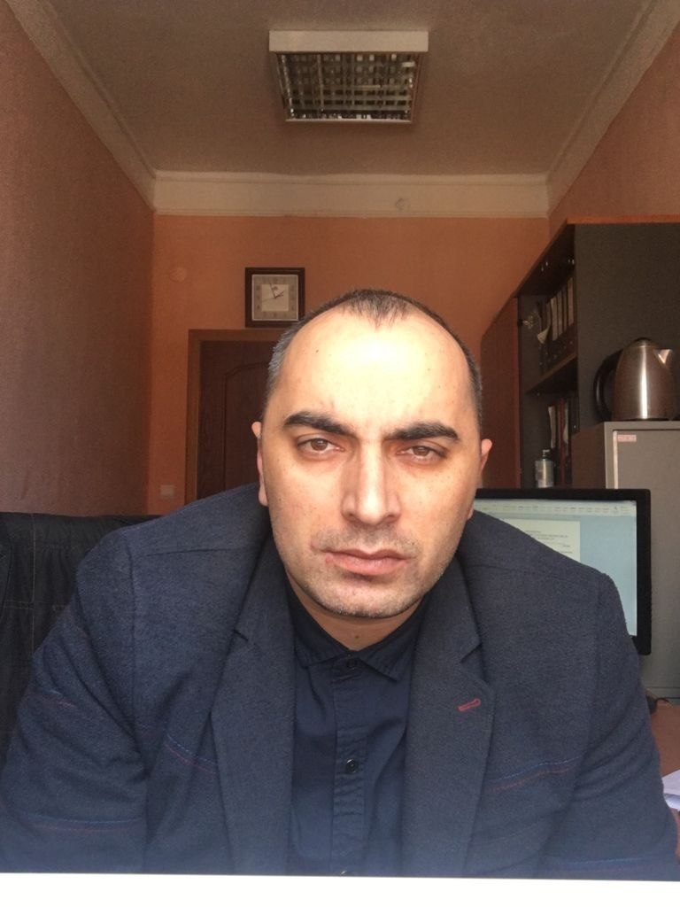

01
Доследственная проверка
Вызвали «побеседовать», просят объяснение, проводят опрос. Стадия, на которой дело ещё можно не допустить до возбуждения.
Работа до возбуждения дела
Защита по уголовным делам. С первого допроса — до приговора и после него.
Уголовное дело начинается не с приговора. Оно начинается с повестки, со звонка в дверь, с фразы «просто поговорим, без протокола». Именно там, в первые часы, решается почти всё.

Уголовная защита — это не красноречие в зале суда. Это работа с документом, со сроком, с процессуальной ошибкой следователя, которую нужно заметить первым и зафиксировать вовремя. Ян Эдуардович ведёт дело от первого разговора в кабинете следователя до вступления приговора в законную силу — и дальше, если нужна апелляция, кассация или условно-досрочное освобождение.
Доверитель всегда знает, на какой стадии находится его дело, какие документы поданы и что будет следующим шагом. Без обещаний «решить вопрос» и без разговоров о связях — только процессуальная работа и честная оценка перспективы.
«Худшее, что можно сделать, — это дать показания раньше, чем рядом появится защитник. Всё остальное поправимо.»
Защита строится по-разному в зависимости от того, где сейчас находится дело. Ниже — стадии, на которых адвокат вступает в работу, и то, что он делает на каждой из них.
Вызвали «побеседовать», просят объяснение, проводят опрос. Стадия, на которой дело ещё можно не допустить до возбуждения.
Первые 48 часов. Участие в допросе, обжалование задержания, работа против заключения под стражу — домашний арест, залог, подписка.
Ходатайства, экспертизы, работа с доказательной базой, обжалование действий следователя, ознакомление с материалами дела.
Позиция защиты, допрос свидетелей, оспаривание экспертиз, прения. Работа на переквалификацию и на смягчение наказания.
Обжалование приговора и промежуточных решений. Поиск нарушений, допущенных судом и следствием, на всю глубину дела.
Условно-досрочное освобождение, замена наказания более мягким, снятие судимости, сопровождение по месту отбывания.
Мошенничество, присвоение и растрата, налоговые составы, злоупотребление полномочиями. Дела с документами и экспертизой.
Другая сторона процесса: заявление о преступлении, представление интересов, гражданский иск о возмещении вреда.
Никакой неопределённости. Вы с самого начала понимаете, что происходит, сколько это стоит и что будет дальше.
Начать с консультацииКоротко о ситуации: что произошло, есть ли уже процессуальный статус, назначены ли следственные действия. Если человек задержан — разговор происходит немедленно, в любое время.
Разбор документов, которые есть на руках. Честный ответ: что реально можно сделать, чего нельзя, и какой исход является в этой ситуации хорошим. Без завышенных ожиданий.
Заключается письменное соглашение об оказании юридической помощи с понятной суммой и объёмом работы. Выписывается ордер — с этого момента адвокат официально вступает в дело.
Формируется позиция, готовятся ходатайства и жалобы, собираются доказательства, при необходимости привлекаются специалисты и независимые эксперты.
Участие во всех следственных действиях и заседаниях, связь с доверителем и его семьёй, обжалование до тех пор, пока остаются инстанции.
Исход уголовного дела почти никогда не бывает бинарным — «посадят или нет». Между этими полюсами есть целый набор результатов, каждый из которых меняет жизнь человека.
Адвокат не вправе гарантировать конкретный исход дела — это прямо запрещено правилами профессиональной этики, и любое такое обещание должно настораживать. Гарантировать можно другое: что будет сделано всё предусмотренное законом, в срок и в полном объёме.
Опишите ситуацию в двух словах. Если дело срочное — звоните напрямую, в любое время суток. Всё сказанное защищено адвокатской тайной.